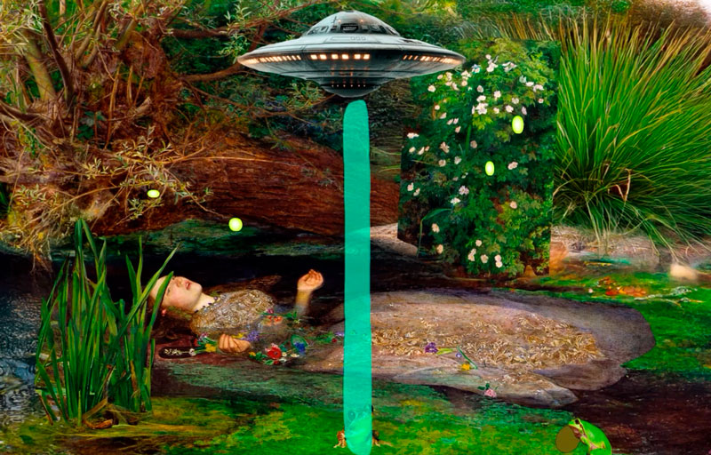
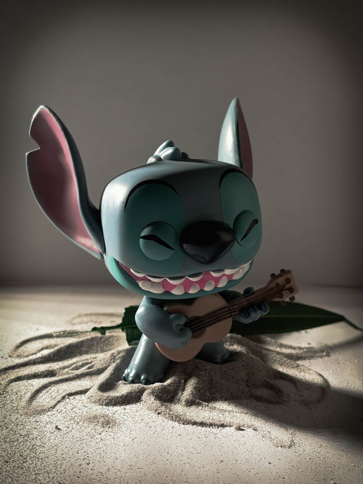
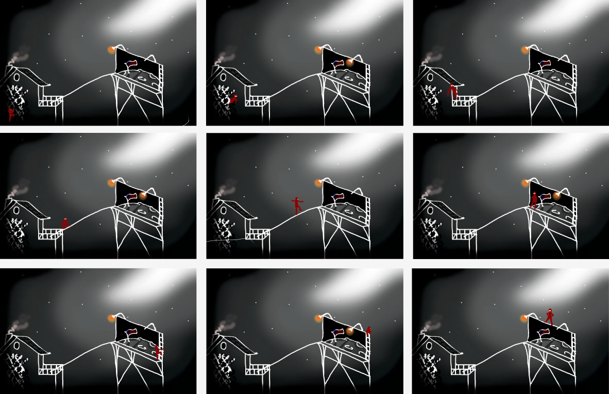
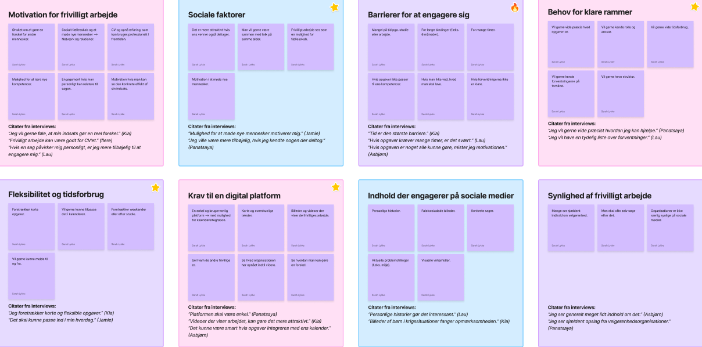
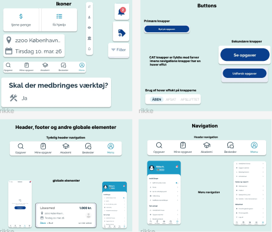
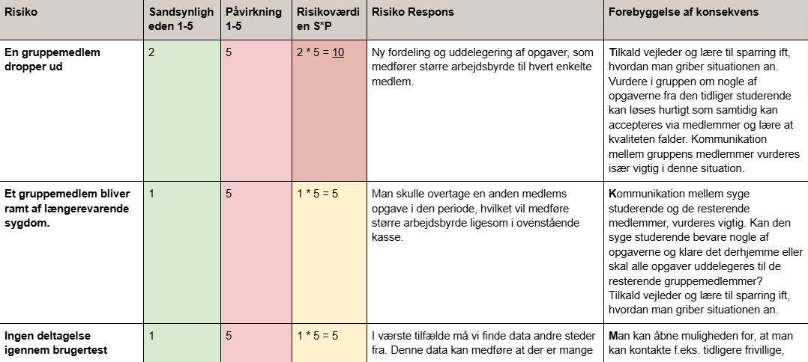
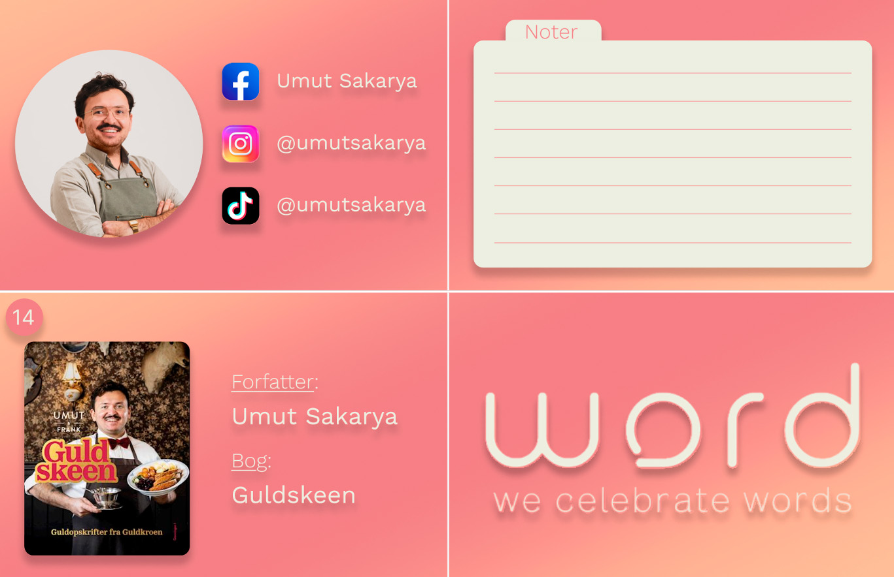
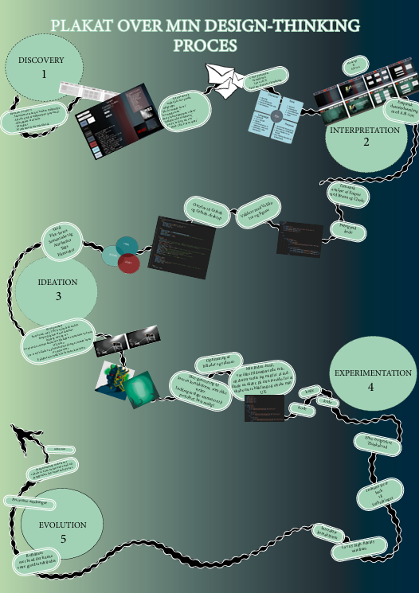
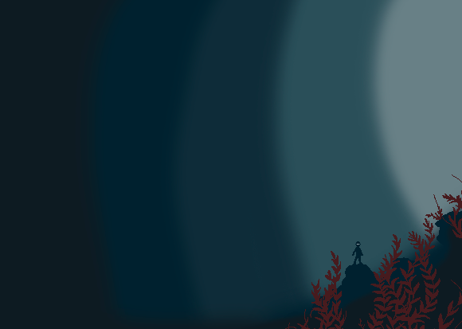
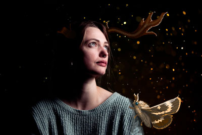











Throughout my education have I gained experience with a wide range of Adobe platforms, which
allows a strengthening of my skills as a multimedia-designer.
This is shown in this short video which was created using Adobe Photoshop and After Effects.
This video is to demonstrate fundamental animation techniques applied to a classic painting.
These visual skills can be applied to produce motion graphics that emphasizes attention to
detail, contrast and atmospheric storytelling.
Key aspects of a professional visual branding and interactiv media design for future video
game projects.
This short animation of a bell thats been made in Adobe Photoshop, After Effect and Premiere
Pro shows the Tone Of Voice at Playdead studio. Even though this video is quite short, it
contains many hours of editing in postproduction both in After Effect and Adobe Premiere
Pro.
With focus on minimalism, an erie atmosphere and the audio, it contains Playdead´s values of
making visual universes with dark undertones and many emplicit details which is reflected in
my bell animation.
Merchendise within the video game industry plays a segnificant key role in engaging with
fans and enhancing the use/playse experience.
My skills extends to conceptually designing, staging and photographing merchandise to align
with the aestetic and tone of the videgames from Playdead.
This specific image demonstrates my ability to produce visually and compelling merchandise
using composition, lighting and shadow techniques to highlight the product.
With the use of Adobe Lightroom Classic can I create polished and professional photos that
cater to a specific target audiende, ensuring the merchandise not only completes the games
branding,
but also strengthen the overall experience.
The fundamental beginning of creating immersive storytelling, whether it's a basic video,
game design, campaigns, cutscenes, visual contepts, TOV building, and so on
it's vital to structur an overall vision for future productions.
This image shows a way to create an immersive storyboard even as simple as it its structur
may be, it plays a fundamental role in design.
I can produce storyboard that, through movement, color and style, effectivly showcases a
deep and immersive narrative layout.
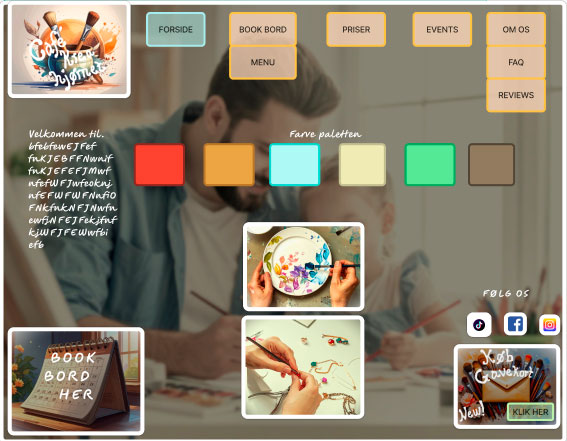
Through my experience developing various UI and UX designs, I have become highly familiar
with shaping overall atmosphere, Tone Of Voice and visual layouts in multimedia projects.
This image is one of many examples, showcasing my previous work in interactive media and
visual storytelling.
A moodboard plays a central role in the development process, helping to research and define
visual aestetics, narrative tone and structual hierarchy.
With my skillset, I can independantly and confidently produce a moodboard in alignment with
a project's crative vision, support immersive branding, and communicate compelling visual
narratives suitable for game design.
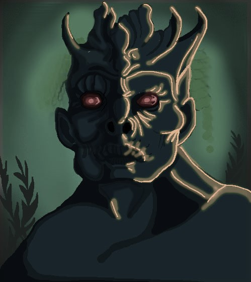
One of my strong suits is my work ethics and my curiousity in regards to creating new and
deeper images.
This image is created in Adobe Photoshpe by various layers from the bagground to highlights
on the monsters body and face.
With my endless creativity, I can work in Adobe Photoshop with multible layers to create
univeres that fits a specific theme, tone or atmosphere.
This set of skills can be used in verious forms in the creative part of a production whether
it will be posters, frontpages, brainstorms and so on.